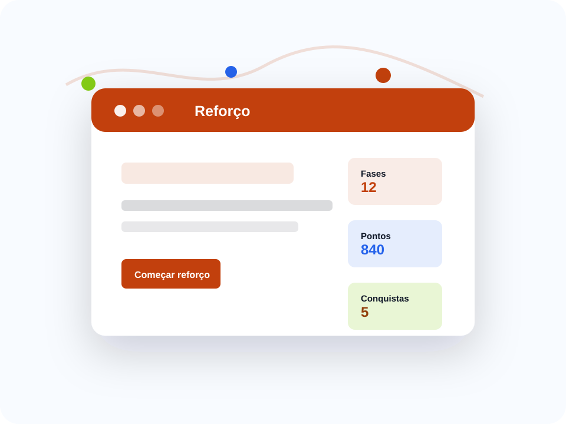

Jogos educativos
Conteúdos de reforço aparecem como fases, cartas, desafios ou missões.
Atividades de reforço com jogos, desafios e progresso.
Um site para apoiar o reforço escolar de forma lúdica, usando desafios, atividades interativas, pontuação e trilhas de aprendizagem.

Conteúdos de reforço aparecem como fases, cartas, desafios ou missões.
O aluno acompanha acertos, sequência e temas dominados.
Atividades se adaptam a conteúdos básicos, intermediários e avançados.
Resolver operações vira um desafio com fases e pontuação.
Perguntas rápidas ajudam a fixar conceitos antes da próxima aula.
Progresso pessoal destaca evolução, não competição excessiva.
Aluno resolve desafios curtos para avançar de fase.
A atividade usa feedback imediato e dicas depois de erros.
Interações nesta visita: 0
Atividades lúdicas.
Progresso fictício.
Marcos desbloqueados.